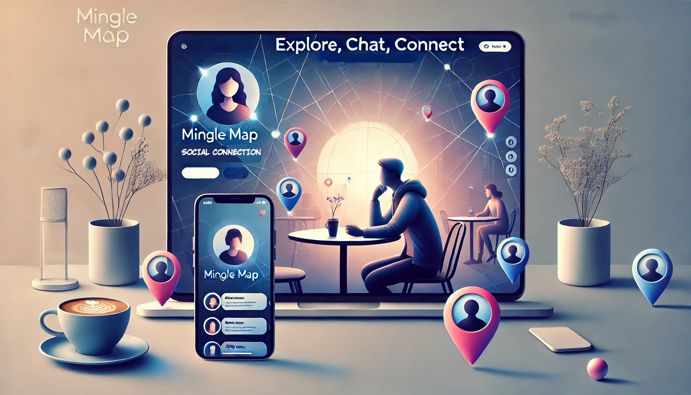
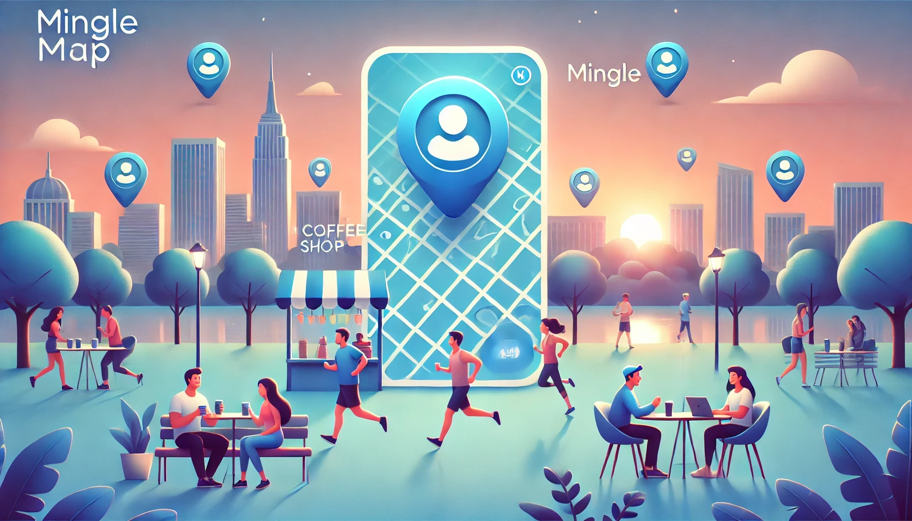

The Problem
Making new friends feels harder than ever. Social media keeps us connected but lacks the authenticity of real life interactions.
Many people struggle to start conversations in public spaces, unsure if others are open to socializing.
Fear of rejection, social anxiety, and the performative nature of social media only add to the challenge.
As a result, people remain isolated even when surrounded by potential friendships.
It's time for a better way to meet and connect.
Our Solution
MingleMap is a smartphone application designed to bridge the gap between individuals who wish to form real-life
social connections in public spaces. It will leverage real-time location-based technology and allow users to see
others who are open to interaction within a shared environment. Unlike traditional social media apps,
MingleMap facilitates immediate,
in-person connections by displaying a curated list of nearby individuals engaging in similar activities.


Explore, Chat, Connect - A New Way To Socialize
As a MingleMap User, I Want To
- - Manage My Presence & Safety: Update my socializing status and visibility, block or report others, and delete my account when desired.
- - Discover people & places: View nearby users, their locations, and local spots—with live counts of active MingleMap users.
- - Assess Trust & Compatibility Scores: See each user’s trust score and shared interest tags to find good matches.
- - Connect & Refine Suggestions: Receive nearby user recommendations, send waves or messages, and give feedback to improve future suggestions.
As a Business Owner, I want to
- - Control visibility: As a business owner, opt in or out of appearing to MingleMap users at any time.
- - Earn a partnership badge: Apply for exclusive partner status so your business is highlighted and recommended first.
- - Engage visitors: Showcase live user counts, special discounts, and amenities (seating, live music, coffee, etc.) to attract customers.
- - Measure impact: View detailed analytics on user visits and discount redemptions to track ROI.